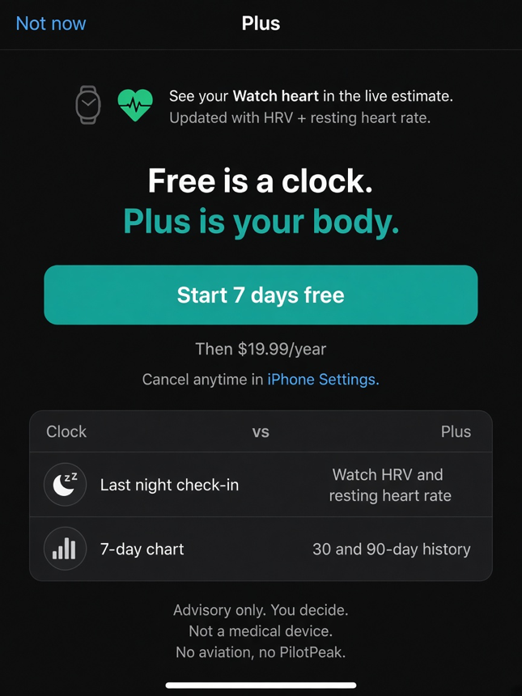

Live mark
Not a sleep log.
Now, likely, and where fatigue is heading. One mark you can glance — current, trajectory, and the next twelve hours.
Personal advisory
Fatigue intelligence, in real time.
Now, likely, and where it is heading — not a sleep log.

What sets Fatigo apart
Fatigo is a live alertness gauge — not a sleep diary, not a medical device, and not a go / no-go light. The score stays on this iPhone.
Live mark
Now, likely, and where fatigue is heading. One mark you can glance — current, trajectory, and the next twelve hours.
Advisory
Advisory only. Fatigo does not tell you to work, drive, or rest. It does not know when you are unsafe. The call is yours.
On-device
Scoring is on-device. No account for the core loop. Health is read-only. Export or delete logs in Settings. Nothing sold for ads.
Plus
Free is a clock. Plus puts Watch heart — HRV and resting HR — in the same mark, every day you wear it.
In the app
The daily habit is the number. Everything else supports that.
Current alertness, how fast it is moving, and a predicted low — from last night, time awake, and the body clock.
A trajectory you can scan. Coffee and naps you enter show up here. Not a history of how you slept.
Two fields: when you woke, hours in bed. Skip it when Plus already has last night from the Watch.
Plus reads HRV and resting heart rate on this iPhone. Last night is automatic when you sleep in the Watch; two fields if it was charging.
Plus ride-alongs for a trip or a night block. Same advisory mark — it does not tell you to go or stop.
The mark on Apple Watch and the Lock Screen. Glance, then you decide.
The same screens you will see in the app.
Fatigo Plus
Free: you enter last night each morning. Coffee and naps when they happen. Sharp stays off.
Plus: Watch HRV and resting heart rate in the number every day you wear it. Last night from the Watch when you sleep in it — two fields if it was charging. Drive, Shift, Lock Screen, longer history. Seven days free, then yearly. Cancel anytime in iPhone Settings.

Fatigo is a wellness and informational tool. Scores are estimates. It is not a medical device. It does not know when you are unsafe. You decide.
What we read, what stays on the iPhone, and how you export or delete logs. Privacy Policy
How the app is licensed, what Plus means at checkout, and what Fatigo is not. Terms of Use
Questions about the app, Health, or Plus. Support